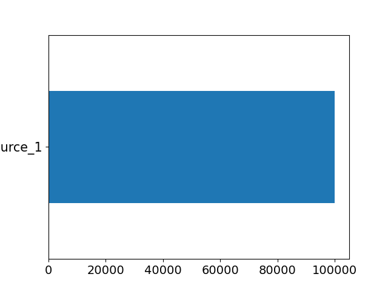
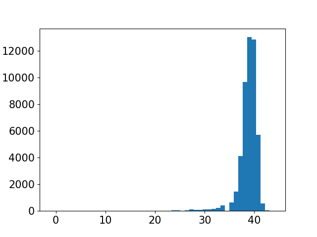
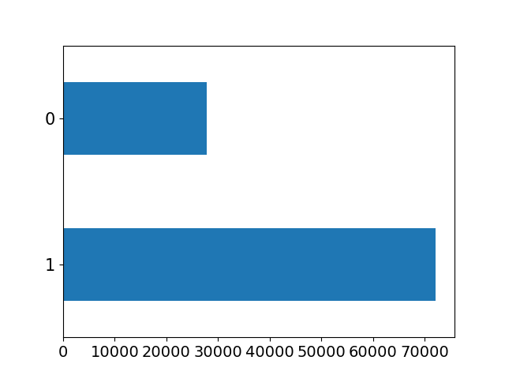
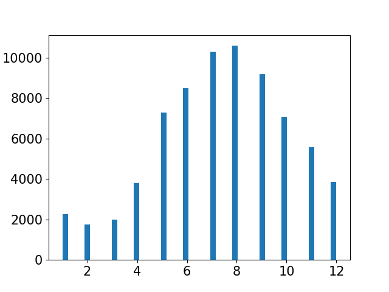
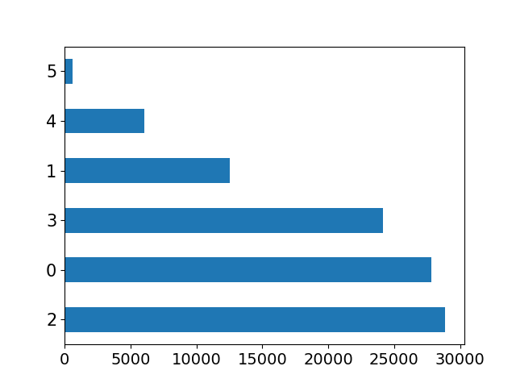

| Unnamed: 0 | Continuous variable (int64) |  |
Min: 500 Max: 1500 Mean ± SD: 1000.0 ± 288.96 Median (IQR): 1000.0 (750.0, 1250.0) |
No missing values |
N=0 |
|---|---|---|---|---|---|
| diab_date | Text or Date |  | Categorical Variable 544 unique values Up to top 10 values are presented |
No missing values |
Text/Date variable No outliers |
| age | Continuous variable (float64) |  | Min: 60.0 Max: 100.0 Mean ± SD: 73.2 ± 8.4 Median (IQR): 72.0 (66.0, 80.0) |
N=40, 4.0% | N=0 |
| sex | Binary Variable |  |
Binary variable M: 50.25% F: 49.75% |
No missing values |
Binary variable No outlier |
| residence | Binary Variable |  |
Binary variable Urban: 91.01% Rural: 8.99% |
No missing values |
Binary variable No outlier |
| bmi_pre_value | Continuous variable (float64) |  |
Min: 16.18 Max: 56.71 Mean ± SD: 29.15 ± 5.34 Median (IQR): 28.26 (25.51, 31.9) |
N=25, 2.5% | N=0 |
| smoking_status_2010 | Categorical variable |  | Text/Date variable Up to top 10 values are presented Out of 3 unique values |
N=31, 3.1% | Categorical variable No outlier |
| ethnicity_desc | Categorical variable |  |
Text/Date variable Up to top 10 values are presented Out of 8 unique values |
No missing values |
Categorical variable No outlier |
| LDL_pre_result | Continuous variable (float64) |  | Min: 23.7 Max: 400.0 Mean ± SD: 102.39 ± 33.74 Median (IQR): 97.0 (79.8, 120.0) |
N=28, 2.8% | N=0 |
| sex2 | Binary Variable (int64) |  | Binary variable 1: 50.25% 0: 49.75% |
No missing values |
Binary variable No outlier |